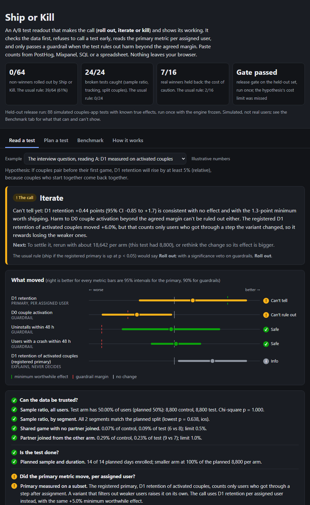
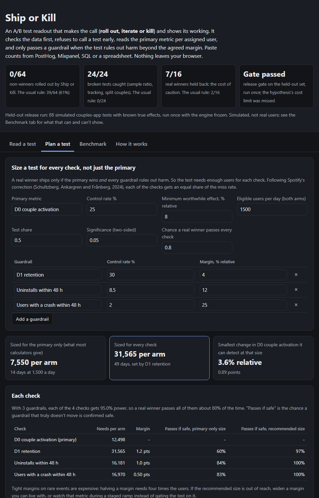
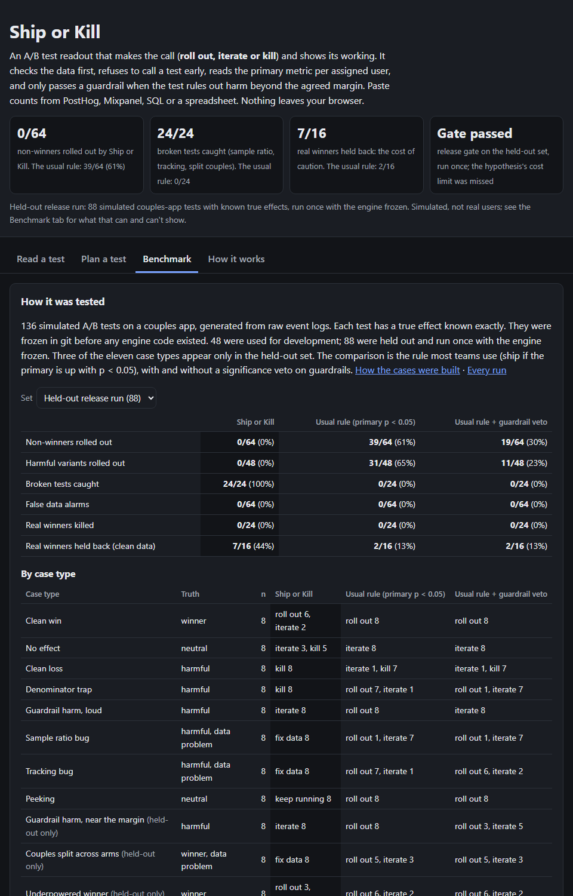

Case study · Personal project · Oct 2026
Ship or Kill
An A/B test readout that makes the call (roll out, iterate or kill) and shows its working. Tested on 136 simulated couples-app experiments with known answers, and on two public experiments.
Akshay Dhar · akshaykumardhar14@gmail.com · github.com/AKSHAYKUMARDHAR/Ship-or-Kill
The problem
A test ends and someone has to say roll out, iterate or kill. The numbers rarely agree with each other: D1 retention is up 6%, D0 activation is down 4% at p = 0.08, one platform looks odd, and the test was planned for another week. Most teams decide on the primary metric's p-value and argue about the rest. Four mistakes recur:
- Broken data looks like a result. About 6% of Microsoft's experiments had a sample ratio mismatch (Fabijan et al., KDD 2019). A variant that crashes before exposure is logged loses its weakest users and looks better than it is.
- Peeking turns noise into wins. In 1,000 A/A tests at Wish, stopping at the first p < 0.05 gave about 21% false positives, against 4.7% at the planned size.
- Conditional metrics reward filtering. Add friction to onboarding and retention "of activated users" rises on its own, even when fewer users are retained in total.
- "Not significantly worse" isn't "not worse". GrowthBook's decision framework example ships "unless any guardrail metrics are statistically significant and negative". That passes any harm the test is too small to see.
Who it's for
- The PM at an early-stage consumer app on PostHog or Mixpanel with no experimentation platform, who needs a call they can defend to the founder.
- The founder reviewing a readout, who wants to see what was checked before "it won".
- The PM planning a test, who needs to know how many users and days it takes to detect the lift and also rule out harm.
What I built
A free web page that takes per-arm counts, not a platform. It reads a test in a fixed order and writes the call with its reasons and the next step. It also has a planner that sizes a test for every check, and a SQL template that turns PostHog-style events into the counts. The engine is one dependency-free JavaScript file: the page runs the same file the benchmark scored.



Product decisions
- Counts in, call out. The page works with any analytics stack. Nothing leaves the browser, so no data-sharing approval is needed to try it.
- Trust before results. A failed sample ratio or tracking audit blocks the call. "Fix the data first" is a valid outcome, and it names where to look.
- Per assigned user, always. A primary measured on a subset chosen after assignment is replaced by its per-user version.
- Non-inferiority guardrails. A guardrail passes only when the test rules out harm beyond the margin agreed before it started. This is the rule in Spotify's "Risk-aware product decisions in A/B tests with multiple metrics" (2024).
- Couples-specific checks. The unit is the couple: the invitee inherits the inviter's variant through the invite token. A partner landing in the other arm is a tracking audit.
- Every call has a next step. Each one says what to do next: how many users to extend by, what to change, or what to check.
How I tested it
The hypothesis, written in the PRD before any test case existed:
- The usual rule (ship if the registered primary is up with p < 0.05) ships at least 20% of variants that aren't real winners.
- Ship or Kill ships at most 5%.
- Its caution costs at most 15 percentage points more of the real winners.
I built a couples-app simulator at the level of raw events. Each installer has a latent commitment and moves through onboarding, partner invite, partner joined and first shared game, then D1 and D7 opens, push disables, crashes and uninstalls. The simulator writes PostHog-style event logs with realistic event loss, and the readout counts come from the SQL template. True effects are computed exactly from the model, not from the sample.
That gives 136 tests across eleven case types:
- clean wins, nulls and losses;
- an onboarding gate that filters out less committed users (the denominator trap);
- a bedtime-push change that lifts D1 but drives push disables and uninstalls;
- a crash before exposure on old Android (sample ratio bug);
- a solo game firing the shared-game event (tracking bug);
- peeked nulls;
- three types held out only: harm just past a margin, couples randomised one partner at a time, and underpowered winners.
All 136 were frozen in git before any engine code existed: 48 for development, 88 held out and run once.
| Held-out release run (88 cases), run once | Ship or Kill | Usual rule | Usual rule + guardrail veto |
|---|---|---|---|
| Non-winners rolled out | 0 / 64 | 39 / 64 | 19 / 64 |
| Harmful variants rolled out | 0 / 48 | 31 / 48 | 11 / 48 |
| Broken tests caught | 24 / 24 | 0 / 24 | 0 / 24 |
| False data alarms | 0 / 64 | 0 / 64 | 0 / 64 |
| Real winners killed | 0 / 24 | 0 / 24 | 0 / 24 |
| Real winners held back (clean data) | 7 / 16 | 2 / 16 | 2 / 16 |
Release gate and hypothesis
- Wrong roll-outs ≤ 5% of non-winners: 0 of 64
- Data problems caught ≥ 90%: 24 of 24
- False data alarms ≤ 5%: 0 of 64
- Winners killed ≤ 5%: 0 of 24
- Usual rule ships ≥ 20% of non-winners: 61%
- Caution costs ≤ 15 points of real winners: it cost 31 (44% held back against 13%)
Two public experiments
- Cookie Cats: a real mobile-game test, 90,189 players, first gate at level 40 instead of 30. Kill: D7 retention fell 0.82 points (95% CI -1.3 to -0.31). It also flags a borderline sample ratio (p = 0.0086), to check before trusting the size of the effect.
- Udacity free-trial screener: a course dataset. Iterate: enrolments fell as intended, but the test can't rule out losing paying students beyond the course's own 0.75-point boundary. Payments per enrolment rose 3.1 points, the same conditional-metric pattern as the interview question below.
What failed, and what's next
The fix is in planning, not the readout. Spotify's paper reaches the same conclusion: with non-inferiority guardrails, power must cover every check. The planner now gives each check an equal share of the miss rate. For an onboarding test with an 8% minimum effect, a standard calculator says 7,550 users per arm. With a D1 guardrail at a -4% margin the test needs 31,565, and at -6% it needs 14,029. The example test plan makes that trade-off explicitly.
The same design holds up on the interview question that started this project: D1 retention +6%, D0 activation -4% at p = 0.08. If D1 was measured on activated couples, it's the denominator trap: per installer, D1 is +0.44 points and can't be told from zero. If D1 was per installer, it's a real win, but the activation harm can't be ruled out. Both readings say iterate, for different reasons, while the usual rule says roll out to both.
Next: sequential testing (always-valid intervals) so teams can look daily without inflating false wins; CUPED variance reduction from pre-period activity; reading counts straight from PostHog's query API.
What I learned
- Most of the value was in the boring checks. Sample ratio and tracking audits stopped 24 broken tests that every p-value rule would have read as results.
- Rules have a cost, and it has to be measured. "Never ship harm" is easy to promise; the benchmark showed what it costs in held-back winners, and that the real fix is sizing tests for their guardrails.
- Couples apps need couple-level randomisation. Randomising partners separately diluted real effects by about half, and the usual rule still shipped 5 of 8 of those tests on the diluted numbers.
- A simulator is only as honest as its separation from the code it tests. The benchmark was frozen before the engine existed, three case types were held out, and the public experiments are reported separately.
The benchmark is simulated: the base rates are illustrative, not any company's data, and the case mix is chosen, not observed. Every number above comes from a logged run in the repo, and the held-out run used the engine frozen at commit e81e1d7.